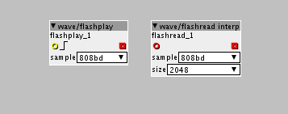

Hello 
I am lurking a bit around in the depth of the factory objects and I stumbled upon a flash read interp object, I think it is a derivative of the wave/flashplay object.

But for some reason it does not work, seems like it is not "finished". It seems like the file reference is not working.
This is from the log, when I try to go live:
Generate code complete
Creating directory on sdcard : /untitled
Done creating directory
Changing working directory on sdcard : /untitled
Done changing working directory
Start compiling patch
Compiling patch... with /Applications/Axoloti.app/Contents/Java/firmware
BDIR = /Users/jakobskouborg/Documents/axoloti/build
FIRMWARE = .
RM
APP
! /Users/jakobskouborg/Documents/axoloti/build/xpatch.h.gch
LINK
/Users/jakobskouborg/Documents/axoloti/build/xpatch.o: In function `PatchProcess(long*, long*)':
xpatch.cpp:(.text+0x164): undefined reference to `binary808bd_raw_start'
collect2: error: ld returned 1 exit status
make: *** [/Users/jakobskouborg/Documents/axoloti/build/xpatch.bin] Error 1
shell task failed, exit value: 2
Compiling patch failed ( untitled )
It would actually be really nice to have variable playback of these files so you could pitch them, reverse them and so on.
@johannes, do you have a finished version of this object somewhere, that you wouldn't mind sharing?
Or maybe someone else made something similar?
Thanks!